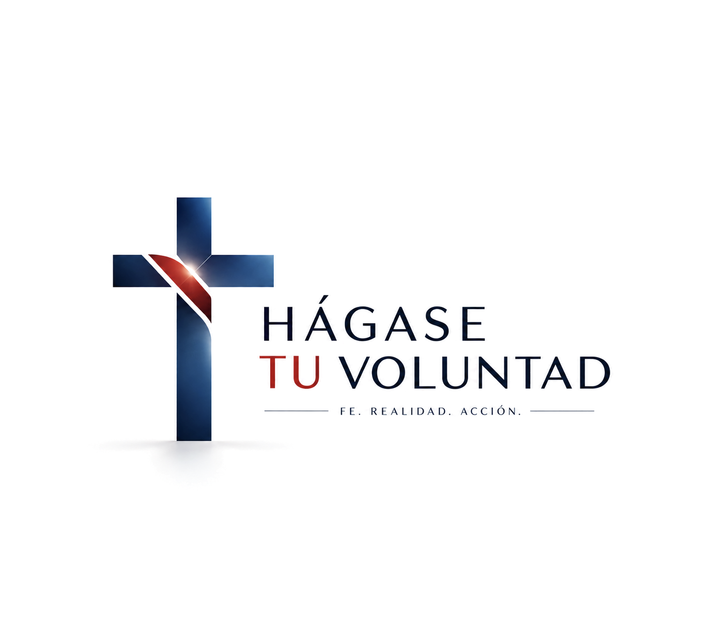
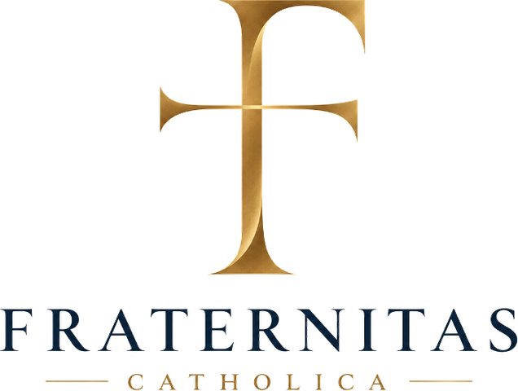
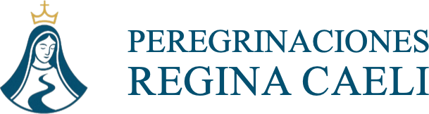
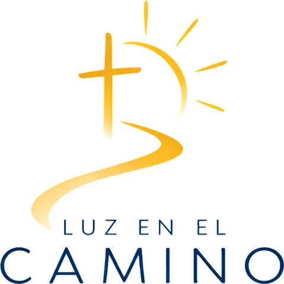
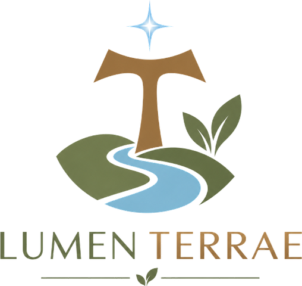

Siete iniciativas con identidad propia que buscan llevar la fe católica a distintas realidades de la vida: la vocación, el liderazgo, el cuerpo, el camino, la cultura, el prójimo y la creación. Siete obras distintas. Una misma convicción: la fe está llamada a entrar en la vida.
Nacidos en Monterrey, Nuevo León, México.
Por qué existe un portafolio y no siete proyectos sueltos.
Hemos aprendido a vivir por partes. La fe por un lado. El trabajo por otro. El dinero por otro. El cuerpo por otro. La cultura por otro. La caridad por otro. La relación con la creación por otro. Cada ámbito con su propia lógica, su propio horario y su propio lenguaje.
Pero no somos siete personas. Somos una. Y vivimos una sola vida. La fe católica no es un compartimento de la existencia: no pertenece únicamente al templo, no termina al salir de la iglesia, no empieza cuando dejamos de trabajar y no se limita a aquello que pensamos. Está llamada a transformar la manera en que vivimos.
¿Puede entrar en nuestras decisiones, en nuestro trabajo, en nuestro liderazgo, en nuestro cuerpo, en nuestra cultura, en nuestros caminos, en nuestra relación con los demás y con la creación? Creemos que sí. Y cada uno de estos siete apostolados es un intento concreto de demostrarlo.
Una fe que se contempla, que se forma, que se discierne, que se vive, que se convierte en servicio y que puede transformar la realidad.
Sin definiciones académicas: en términos humanos.
Un apostolado nace cuando aquello que creemos deja de ser solamente una convicción interior y se convierte en una respuesta concreta al mundo que nos rodea. Es fe que se organiza. Fe que se forma. Fe que sirve. Fe que se hace vida.
Ninguno de los siete apostolados es un proyecto al azar. Cada uno tiene su propia identidad, lenguaje, comunidad, experiencia y misión. Pero todos parten de la misma raíz: la convicción de que una fe verdaderamente vivida debe convertirse en vida, responsabilidad y servicio.
Antes de los nombres, las realidades de la vida donde cada apostolado decide entrar.
Cada uno es una puerta distinta a la misma casa. No todos entran por la misma.

¿Estoy haciendo Su Voluntad?
Un espacio de formación y reflexión para integrar fe, razón y acción en la vida personal, profesional y patrimonial. Una sola vida, una sola dirección. Libro, podcast y conferencias.

Formar líderes. Discernir decisiones. Transformar realidades.
Una fraternidad de líderes católicos para vivir la fe en las decisiones que importan. Liderar desde dentro, transformar hacia fuera.
El deporte nos reúne. La fe nos une.
Competimos con intensidad, vivimos con coherencia y construimos comunidad. Una comunidad deportiva donde la fe se encuentra con el entrenamiento, la amistad y la familia.

Caminamos hacia el Cielo, guiados por María.
Peregrinaciones católicas a los lugares donde la fe se hizo historia y la gracia dejó huella. Del camino exterior hacia el encuentro interior.
No declara. Sugiere.
Diseño inspirado en la belleza de la tradición católica. Piezas contemporáneas, minimalistas y con significado. Algunas cosas no se dicen: se llevan.

Protegemos la infancia mientras el camino continúa.
Un apostolado dedicado a acompañar y proteger a niñas, niños y adolescentes de familias migrantes en situación de vulnerabilidad. La migración puede ser temporal; la infancia no se puede recuperar.

Formamos custodios de la casa común.
Un apostolado católico por la ecología integral. No buscamos solamente cambiar hábitos: buscamos transformar la mirada que los origina.
Qué convierte a siete obras distintas en un mismo portafolio.
No hacemos lo mismo, y eso es precisamente lo que buscamos. Porque la vida tampoco es una sola realidad: tiene vocación, tiene trabajo, tiene cuerpo, tiene relaciones, tiene cultura, tiene responsabilidad, tiene prójimo y tiene creación. Cada apostolado entra por una puerta diferente.
Esta secuencia pertenece al portafolio, no a cada apostolado. Cada obra tiene su propio método: Fraternitas trabaja Formar, Compartir, Discernir y Actuar; Lumen Terrae Contemplar, Convertirse, Cuidar, Servir y Evangelizar; Sintonía Entrenar, Competir, Convivir, Crecer y Servir.
Personas capaces de ordenar su interior, reconocer su responsabilidad y poner aquello que han recibido al servicio de Dios y de los demás. Alguien que contempla antes de actuar, se forma antes de opinar, discierne antes de decidir, asume antes de exigir y sirve antes de buscar reconocimiento.
Y los caminos pueden encontrarse. Puedes llegar buscando respuestas para tu vida y encontrar una comunidad; llegar por el deporte y descubrir una responsabilidad; llegar por la belleza y encontrar una tradición. Los apostolados no necesitan ser compartimentos cerrados: son puertas que pueden encontrarse.
Convergencias conceptuales entre las obras. No describen colaboraciones formalmente establecidas.
Una ciudad concreta, una realidad concreta, un punto de partida.
Monterrey, Nuevo León, México. Aquí comienza este conjunto de iniciativas. Una vocación que mira mucho más allá, construida desde un lugar real y no desde una aspiración abstracta. Nuestro origen es local. Nuestra vocación, abierta.
Los siete apostolados nacen de una misma inquietud: crear caminos concretos para vivir la fe católica con profundidad, coherencia y responsabilidad en las realidades del mundo contemporáneo. Cada uno tiene su propia identidad, pero todos comparten una misma raíz y una misma orientación: que la fe se convierta en vida, y que una vida transformada pueda convertirse en servicio.
¿Por dónde quieres comenzar?
Una misión: vivir la fe y ponerla al servicio.
Encuentra tu camino